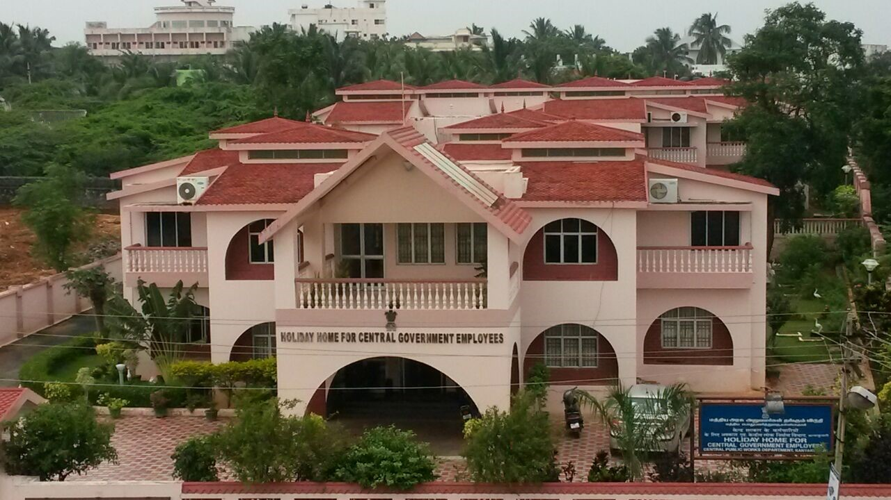

Holiday Homes for Central Government

About Holiday Homes for Central Government
- Accommodation Facilities: Kanyakumari offers holiday homes for Central Government employees, providing comfortable accommodation options during their visit to the region. These holiday homes are typically equipped with modern amenities and facilities to ensure a pleasant stay for guests. They may include furnished rooms, air conditioning, dining areas, and recreational spaces.
- Affordable Rates:The holiday homes in Kanyakumari for Central Government employees often offer accommodation at subsidized rates, making them an affordable option for those on official visits or vacationing with their families. These rates are usually lower compared to commercial hotels and resorts, allowing government employees to enjoy their stay without breaking the bank.
- Convenient Locations:The holiday homes are strategically located in convenient areas of Kanyakumari, providing easy access to tourist attractions, transportation hubs, and other amenities. Whether employees wish to explore the beaches, temples, or cultural sites, they can find holiday homes situated in close proximity to these places of interest
- Booking Procedures:Central Government employees can typically book holiday homes in Kanyakumari through designated channels or online platforms managed by the concerned government departments or agencies. The booking process may involve submitting necessary documents and adhering to specific guidelines and regulations set by the authorities.
- Security and Comfort: Holiday homes for Central Government employees in Kanyakumari prioritize the safety and comfort of their guests. These accommodations often have security measures in place to ensure the well-being of residents, including CCTV surveillance, gated entrances, and round-the-clock staff assistance. Additionally, amenities such as power backup, Wi-Fi connectivity, and housekeeping services contribute to a comfortable and hassle-free stay experience.